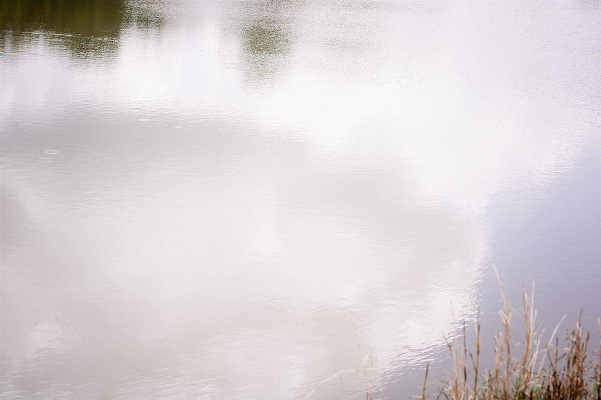
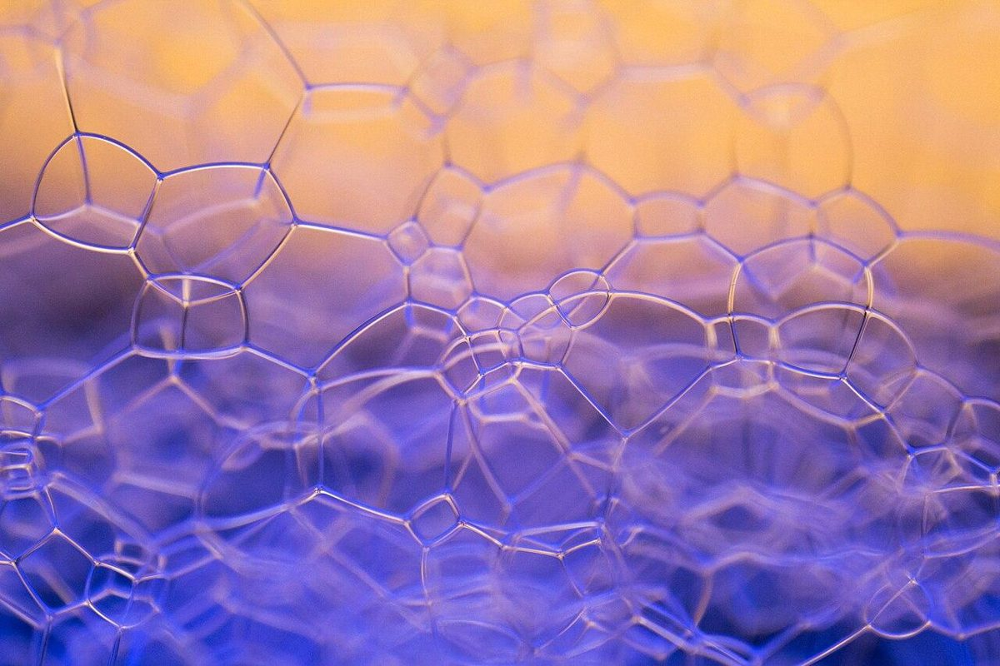
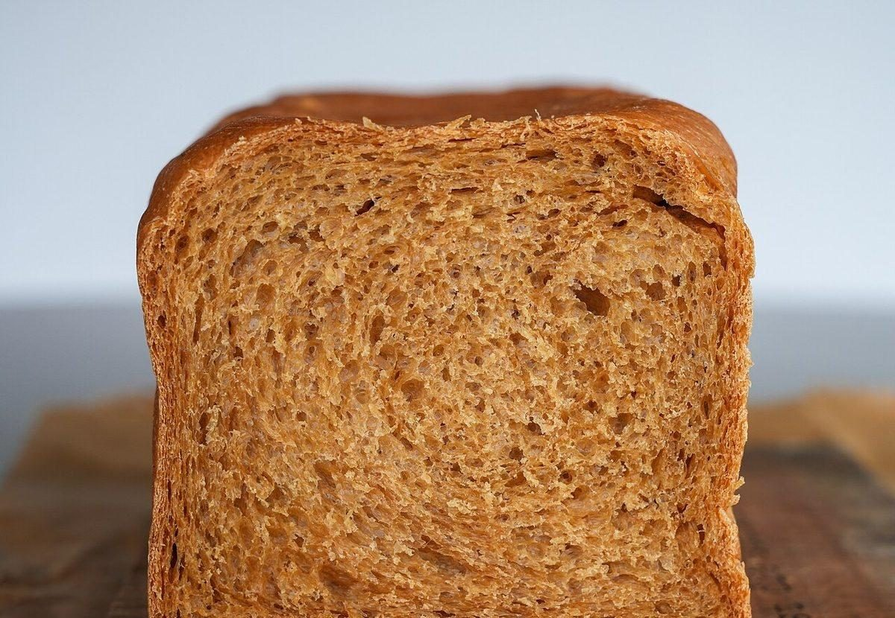
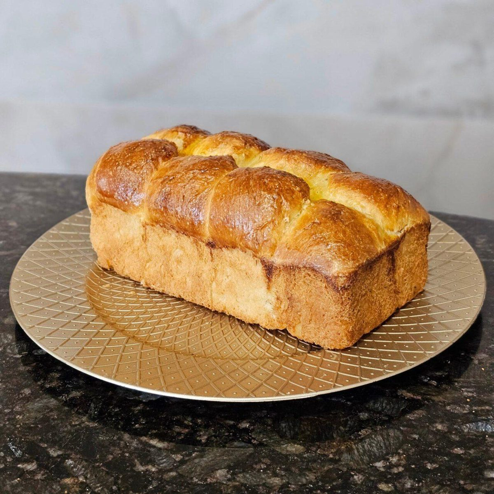

水深5m
店のこと
お店について確認できているのは、所在地とInstagramのアカウントだけです。
このページの「想像してみる」部分は、制作側が想像して書いたものです。お店の実際の様子・考え・商品とは関係がありません。
確認できていること
- 店名は「Pan divers(パン ディベール) 中津川店」、業種はパン屋
- 所在地は岐阜県中津川市手賀野361-1(〒508-0015)
- 電話番号はなし。連絡はInstagramから
- 営業時間・定休日・メニュー・価格・ご予約・駐車場は準備中

想像してみる
ログブックの余白に
由来は分かりません。制作側は、毎日いろいろな顔ぶれのパンが並ぶお店かもしれない、と想像しました(実際のお店の姿ではありません)。潜水日誌には、その日に見たものを書き留める余白があります。このページの下の写真も、水中の泡を思わせるものと、パンの断面を思わせるものを並べただけで、お店の商品ではありません。



町のこと
中津川市について
お店の所在地は岐阜県中津川市です。お店が潜水や海と関係しているかどうかは分かりません。